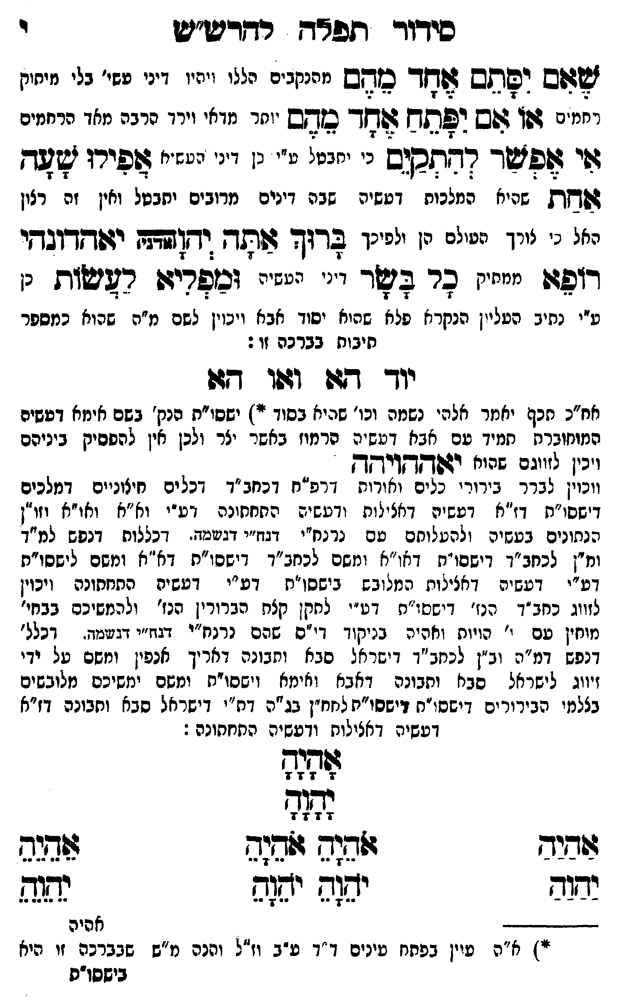

Neue Klartextfassung
שאם יסתם אחד מהם [מהנקבים הללו והיו דיני עשיה בלי מיתוק רחמים] או אם יפתח אחד מהם [יותר מדאי וירד ויתרבה מדת הרחמים] אי אפשר להתקים [כי יתבטל עי"כ דין דיני העשיה] אפילו שעה אחת [שהיא המלכות דעשיה שבה דינים מרובים ויתבטל ואין זה רצון האל כי צריך העולם הן ולפיכך] ברוך אתה יהוה (אדני) יאהדונהי רופא [ממתיק] כל בשר [דיני העשיה] ומפליא לעשות [כן ע"י נתיב העליון הנקרא פלא יסוד אבא ויכוין לשם מ"ה שהוא כמספר תיבות ברכה זו:] יוד הא ואו הא (אח"כ תכף יאמר אלהי נשמה וכו' שהיא בסוד *) [ישסו"ת הנק' בשם אימא דעשיה המתחברת תמיד עם אבא דעשיה בברכת אשר יצר ולכן אין להפסיק ביניהם ויכוין לזווגם זיווג יאההויהה] [ויכוין לברר בירורי כלים ואורות דרפ"ח דכחב"ד דכלים חיצונים דמלכים דישסו"ת דז"א דעשיה דכללות ורביעיה התחתונה דע"י וא"א ואו"א וזו"ן הנתונים בעשיה ולהעלותם עם נרנח"י דנה"י דנשמה דכללות דנפש למ"ד ומ"ן לכחב"ד דישסו"ת דאו"א ומשם לכחב"ד דישסו"ת דא"א ומשם לישסו"ת דע"י דעשיה דכללות הכלולים בישסו"ת דע"י דעשיה התחתונה ויכוין לזווג כחב"ד הנז' דישסו"ת דע"י לתקן כלם הבירורין הנז' ולהמשיכם בבחי' מוחין עם י' הויות וחלפי' בניקוד כ"ס שהם נרנח"י דנה"י דנשמה דכל' דנפש דמ"ה וב"ן לכחב"ד דישראל סבא ותבונה דאריך אנפין ומשם על ידי זיווג לישראל סבא ותבונה דאבא ואימא וישסו"ת ומשם ימשיכם מלובשים בצלמי הבירורים דישסו"ת לנה"ח בג"ה דישראל סבא ותבונה דז"א דעשיה דכללות ורביעיה התחתונה:[?]] אָהָיָהָ יָהָוָהָ === טבלה === [טור ימין] אַהַיַהַ יַהַוַהַ [טור אמצעי] אֹהֵיָהֵ אֹהֵיָהֵ יֹהֵוָהֵ יֹהֵוָהֵ [טור שמאל] אֵהֵיֵהֵ יֵהֵוֵהֵ === סוף טבלה === — הג"ה בתחתית העמוד — (*) א"ה עיין בפתח עינים דף י"ד ע"ב וז"ל והכי מ"ש שבברכה זו היא בישסו"ת הנק' בשם אימא המתחברת לעולם עם אבא וכו' ויכוין לזווגם וכו' וצ"ל דאיך יזדווגו ב' מין בשאינו מינו כי לאו"א כנודע יש ב' מיני זיווגים וכן ישסו"ת ועוד דאו"א הם מגרון דא"א ועד החזה וישסו"ת הם מהחזה ועד הטבור ואין זה קודם אחר זה כלל ולזה כנ"ל בע"ח בש' השמות בצ"ח ש"י ספ"ב ופ"ם מט"ם ועיין שם סמ"ק [?] וכו' ויעב"א[?] — א"א נ"י והצעיר אליעזר ידיד הלוי
Original gegen neue OCR · Niqqud für Vergleich ausgeblendet
Original
שאם יסתם אחד מהם [מהנקביםK024-001 הללו והיוK024-002 דיני עשיהK024-003 בלי מיתוק רחמים] או אם יפתח אחד מהם [יותרK024-004 מדאי וירד ויתרבה מדת הרחמים] אי אפשר להתקים [כי יתבטל עי"כ דין דיני העשיה] אפילו שעה אחת [שהיא המלכות דעשיהK024-005 שבה דינים מרובים ויתבטלK024-006 ואין זה רצון האל כי צריךK024-007 העולם הן ולפיכך] ברוך אתה יהוה (אדני) יאהדונהי רופא [ממתיק] כלK024-008 בשר [דיני העשיה] ומפליא לעשות [כןK024-009 ע"י נתיב העליוןK024-010 הנקרא פלא ∅K024-011 יסוד אבא ויכוין לשם מ"ה שהוא כמספר תיבות ברכה זו:] יוד הא ואו הא (אח"כK024-012 תכף יאמר אלהי נשמה וכו' שהיא בסוד *) [ישסו"תK024-013 הנק' בשם אימא דעשיה המתחברת תמידK024-014 עם אבא דעשיה בברכת אשרK024-015 יצר ולכן אין להפסיק ביניהם ויכויןK024-016 לזווגם שהוא יאההויהה] [ויכוין לברר בירורי כלים ואורותK024-017 דרפ"ח דכחב"ד דכלים חיצוניםK024-018 דמלכים דישסו"תK024-019 דז"א דעשיה דכללות ורביעיה התחתונה דע"י וא"אK024-020 ואו"א וזו"ן הנתונים בעשיה ולהעלותם עםK024-021 נרנח"י דנה"י דנשמהK024-022 דכללות דנפש למ"ד ומ"ן לכחב"ד דישסו"תK024-023 דאו"א ומשם לכחב"ד דישסו"תK024-024 דא"א ומשם לישסו"ת דע"י דעשיה דכללות הכלולים בישסו"תK024-025 דע"י דעשיה התחתונהK024-026 ויכוין לזווג כחב"ד הנז' דישסו"ת דע"י לתקן כלם הבירוריןK024-027 הנז' ולהמשיכםK024-028 בבחי' מוחין עם י' הויות וחלפי' בניקוד כ"סK024-029 שהם נרנח"י דנה"י דנשמה דכל'K024-030 דנפש דמ"ה וב"ןK024-031 לכחב"ד דישראל סבא ותבונה דאריך אנפין ומשם עלK024-032 ידי זיווג לישראל סבאK024-033 ותבונה דאבא ואימא וישסו"תK024-034 ומשם ימשיכם מלובשים בצלמי הבירוריםK024-035 דישסו"ת לנה"חK024-036 בג"ה ∅K024-037 דישראל סבא ותבונה דז"א דעשיה דכללות ורביעיה התחתונה:]K024-038 אהיה יהוה === טבלה === [טור ימין] אהיה יהוה [טור אמצעי] אהיה אהיה יהוה יהוה [טור שמאל] אהיה יהוה === סוף טבלה === — הג"ה בתחתית העמוד — (*)K024-039 א"ה עיין בפתחK024-040 עינים דף י"דK024-041 ע"ב וז"ל והכיK024-042 מ"ש שבברכהK024-043 זו היא בישסו"ת הנק' בשם אימא המתחברת לעולם עם אבא וכו' ויכוין לזווגם וכו' וצ"ל דאיך יזדווגו ב' מין בשאינו מינו כי לאו"א כנודע יש ב' מיני זיווגים וכן ישסו"ת ועוד דאו"א הם מגרון דא"א ועד החזה וישסו"ת הם מהחזה ועד הטבור ואין זה קודם אחר זה כלל ולזה כנ"ל בע"ח בש' השמות בצ"ח ש"י ספ"ב ופ"ם מט"ם ועיין שם סמ"ק וכו' ויעב"א — א"א נ"י והצעיר אליעזר ידיד הלויK024-044
OCR · fehlbar
סידוך תפאח רדרט"ש י ששש יפסתש טחןך- כבזחש מהנקביםK024-001 הללו ויתיוK024-002 דיני עשי'K024-003 בלי מיחוק א246 . 6. 46 116 זדז:. רחמזם 4שץ גשש ילדלץק דו-- ב קש י(חרK024-004 מדאי וירד הרבה מאך הרחמים ה ח 7 ת ר -- ש 70 ח ם לל גוי שפטך רחתסישס נ' ינני נ' נ יי' ינזי' שפירי שעד - 32 33 ץ : - - - :ץ -"ז"' 22 6 7 (חת שחיא המלכוח דטשיהK024-005 שבה דינים מרובים יתבטלK024-006 ואין זה רצון האל ני צורךK024-007 העולם הן ולפיכך בדוד שתד וחדלו יזשדץקדובחי רזפגש יי"ח ערK024-008 בשר י". ייי זכפריצן רשישות נK024-009 ע"י נתיב הטלייןK024-010 הנקרא פלא שהואK024-011 יסוד אבא ויכוין לשם מ"ה שהוא כמספר חיבוח בברכה זו: יוך ד[ וטו דבן אח"כK024-012 תכף יאמר אלהי נשמה וכו' שהיא בסוד י ישסו"תK024-013 הנק' בשם איזא דטשיה המוחוברק חמידK024-014 עם אביז דטש"ה הרמוז באשרK024-015 יצר ולכן אין להפסיק ביניהם ויביןK024-016 לזווגם שהוח ידפ[זחויץךק ווכוזן גברר בירורז מנים אודוK024-017 דרפ"ח דכחב"ד דכלים חיגונייםK024-018 דמלכים דישסו"חK024-019 דז"א דצשיק דאצי[ות ודעשי ג התחחונה זזע"י זא"אK024-020 ואו"א וזו"ן הנתונים בטשיה ולהטלוחם טםK024-021 נרנח"י דגז"י דגשמד.K024-022 דכללות דנפש למ"ד ומ"ן לכחב"ך דישפו"חK024-023 דאו"א ומשם לכחב"ד דישסו"חK024-024 דא"א ומשם לישסו"ת דע"י דעשיה דאצינוח המל( בש בישסו"חK024-025 דע"י דעשית פחחתונהK024-026 ויכוין לזווג כחב"ד הנז' דישסו"ח דט". לחקן קצת הברוריןK024-027 הנז' ולהמשיכסK024-028 בבחי' מוחין עם י' הויוק ואהיה בניקוך די"סK024-029 שהם נרנח"י ד2וז"י דנגנד. דכלל'K024-030 דנפש דמ"י: יב"ןK024-031 לכחב"ד דישראל סבא ותבונה דאריך אנפין ומשם טלK024-032 ידי זיווג לישראל סבחK024-033 ותבונה דאבא ואימא וישסו"חK024-034 ומשם ימשיכם מלובשים בצלמי הבירור ים דישסו"חK024-035 דישסו"ת לחח"ןK024-036 בג"ה דת"יK024-037 דישראל סבא ותבונה דז"א דעשיה דאצילוח ודעשיה החחתונה : לללנח 7' 7 7 7 עחצע 7 7 72 7 זדיב ((שוש לדגה ל(תנה ישוב יע(ה יזש(ש נשגש ללאK024-038 אהיה "זK024-039 א"ה עיין בפחחK024-040 עינים ד"דK024-041 ע"ב וז"ל והנהK024-042 מ"ש שבברבהK024-043 זו היא בישסו"ת ∅K024-044